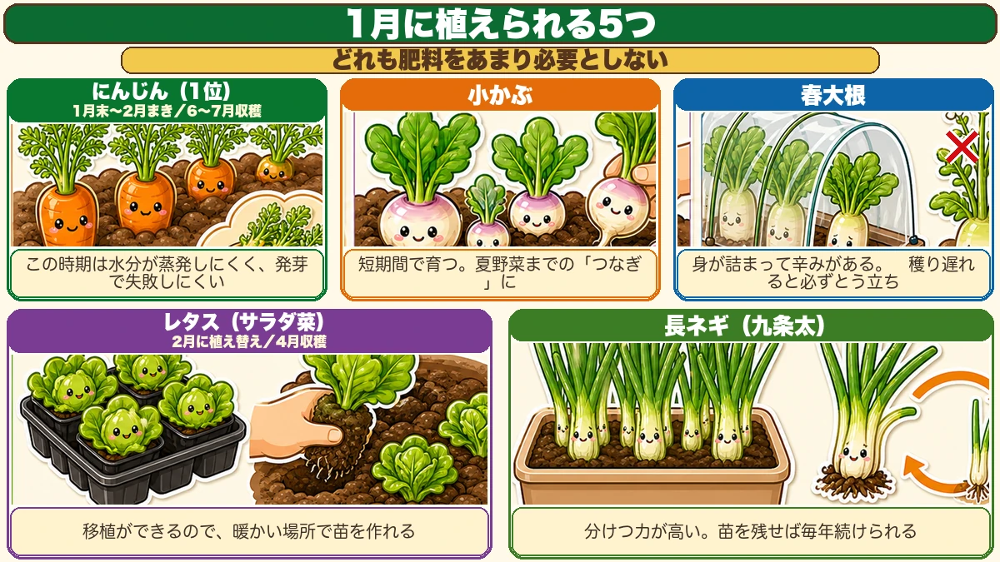
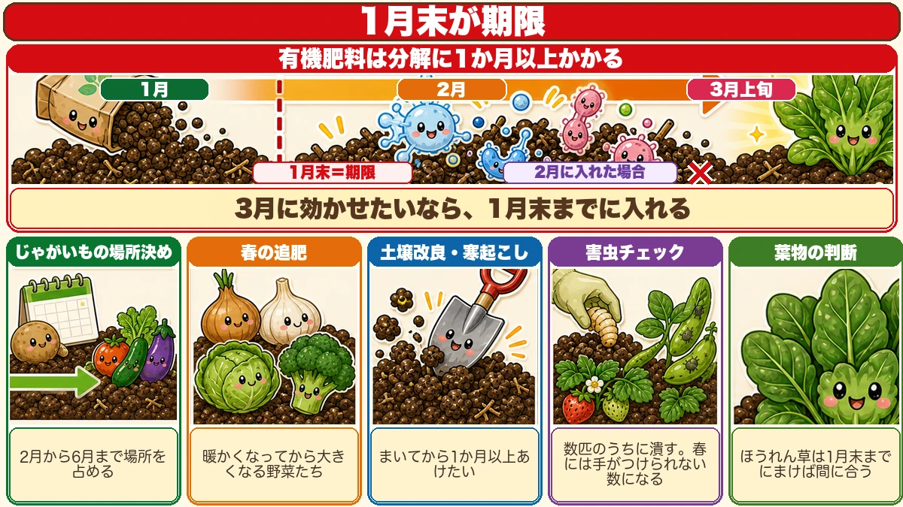
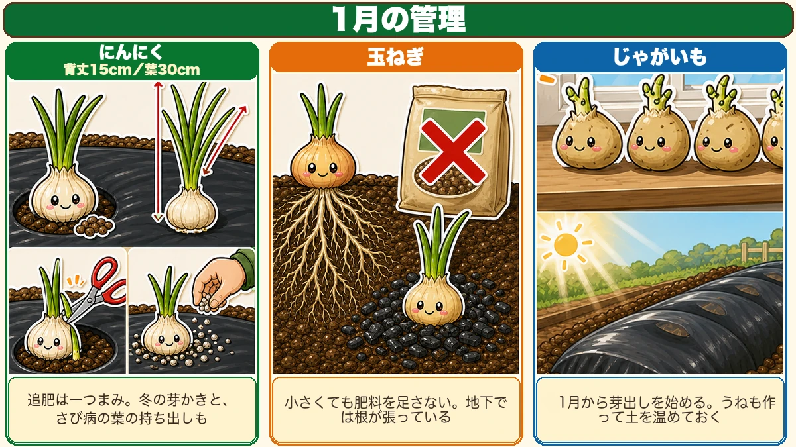

1月にまく・植える野菜｜冬のにんじん・大根・かぶ・レタス・長ネギと春じゃがいもの準備
どうも、8150（えいこう）です🌱 家庭菜園歴8年、理科の教員免許を持っていて、有機・無農薬で野菜を育てています。
📖 この記事の目次
この記事で分かること
- 1月は寒さの本番で、畑をお休みする人が多い月です。でも、ひと工夫すれば、種まきを始められる野菜があります。
- 1月にまけるのは、にんじん、大根、小かぶなど。どれも、マルチやトンネル、不織布で保温することが前提です。
- レタスや長ネギは、暖かい場所で苗を作るところから始められます。
- ほうれん草や小松菜も1月にまけますが、寒さでほとんど育たず、3月にまいたものと収穫時期があまり変わりません。
- 春じゃがいもは、1月のうちに植える場所を決めて、種いもを手に入れておきます。
- 有機の肥料は、冬は効くまでに時間がかかります。春に使う畑の土づくりは、早めに始めておきます。
お正月が明けて、いよいよ寒さが本番。畑の野菜も、虫も、土の中の微生物も、みんなじっとしている季節です。「1月は畑はお休み」という方も多いと思います。
でも、2月、3月になると、夏野菜の準備や春の種まきで、やることが一気に増えてきます。そのときになってあわてないように、1月のうちに少しだけ動いておく。それだけで、春の畑がぐっと楽になるんです。
安心してください。寒い中でたくさん作業する必要はありません。この記事では、1月にできる種まきと、1月のうちにやっておきたい準備を、順番に書いていきます。

早見：1月の畑の基本（ひと目で分かる目安）
1月に始められるもの
- にんじん：黒マルチやトンネル、不織布で保温して種まき。収穫は5月〜7月ごろ
- 大根（春大根）：保温して種まき。春にとう立ちしにくい品種を選ぶ
- 小かぶ：保温して種まき。夏野菜を植えるまでのつなぎに
- レタス：暖かい場所で苗を作ってから植える。玉レタスなら1月まきで4月ごろ収穫の例も
- 長ネギ：トレイなどで苗を作る
1月にまかなくてもいいもの
- ほうれん草・小松菜：まけるけれど、寒くてほとんど育たない。3月にまくのと収穫時期があまり変わらない
1月にやっておきたい準備
- 1年の作付け計画を立てる
- 春じゃがいもの植える場所を決める
- 種いもを手に入れる
- 春に使う畑の土づくりを始める
- 育てている野菜（にんにく、玉ねぎ、そら豆、いちごなど）の防寒と見回り
1月の作業カレンダー（上旬・中旬・下旬）
- 上旬：1年の作付け計画を立てる。春に使う畑の土づくりを始める。育てている野菜の防寒を見直す
- 中旬：種いもや春の種をそろえる。保温してにんじん・大根・小かぶの種まき。レタスや長ネギの苗づくり
- 下旬：種いもの芽出しを始める（2月下旬〜3月に植える場合）。トンネルの換気と、霜柱の見回り
寒い地域では、1月の種まきは無理をせず、計画と準備にあてるだけでも十分です。暖かい地域では、もう少し早めに動けます。
作業の手順
ここからは、1月の作業を順番に書いていきます。
手順1：1年の作付け計画を立てる
1月に入ったら、まずは1年の作付け計画を立てるのがおすすめです。
どの畝に、いつ、何を植えるか。春じゃがいもはどこにするか。夏野菜はどこにするか。秋冬野菜はどこに回すか。紙に畑の図を描いて、1年の流れを書きこんでいきます。
特に気をつけたいのが、同じなかまの野菜を続けて同じ場所に植えないことです（連作を避ける）。前の年にトマトやナス、ピーマンを植えた場所には、同じナス科のじゃがいもを植えないようにします。
計画を立てておくと、1月に何をまけるか、どこの土づくりを先にするかも、自然と見えてきます。
作付け計画の例
たとえば、畝が4本ある畑なら、こんなふうに1年を割り振る方法があります。
- 畝1：1月ににんじんをまく → 6月に収穫 → 夏は葉物やモロヘイヤ → 秋にキャベツやブロッコリー
- 畝2：2月下旬〜3月に春じゃがいも → 6月に収穫 → 夏は枝豆や秋の葉物
- 畝3：5月にトマトやナスなどの夏野菜 → 秋まで収穫 → 冬は空けて土を休ませる
- 畝4：1月に小かぶやレタス → 4月に収穫 → 5月にきゅうりやかぼちゃ
これはあくまで一例です。大事なのは、収穫が終わる時期と、次に植える時期がつながっているかを確かめることです。紙に書いてみると、空く時期や、重なってしまう時期がよく見えます。
手順2：春じゃがいもの場所を決める
春じゃがいもは、2月から6月ごろまで、わりと長いあいだ畑を使う野菜です。6月に収穫したあとに夏野菜を植えようとすると、時期としては少し遅くなってしまいます。
ですから、じゃがいもの場所を決めるときは、「収穫したあとに何を植えるか」もセットで考えておくのがコツです。
- 前の年にナス科（トマト・ナス・ピーマン・じゃがいも）を植えた場所は避ける
- できれば、3〜4年はナス科を植えていない場所にする
- 水はけのよい場所を選ぶ
手順3：種いもを手に入れる
じゃがいもの種いもは、1月の中ごろから、ホームセンターに並び始めます。
「まだ植えるには早すぎる」と思うかもしれませんが、珍しい品種や人気の品種は、早いうちに売り切れてしまうことがあります。欲しい品種があるなら、1月のうちに手に入れておくと安心です。
種いもを選ぶときは、次の点を見てください。
- かたくて、しわや傷がない
- 腐ったところや、カビがない
買った種いもは、植える日まで、風通しのよい涼しい場所で保存します。暖かい部屋に置いておくと、芽がどんどん伸びてしまいます。凍らせないように気をつけてください。
手順4：春に使う畑の土づくりを始める
有機の肥料やたい肥は、土の中の微生物が分解して、初めて野菜が吸える形になります。冬は微生物の動きがにぶいので、分解にとても時間がかかります。
そのため、春にまく・植える場所の土づくりは、早めに始めておくのがおすすめです。1月にまくにんじんなら、種まきの1か月以上前、つまり11月の終わりから12月の中ごろまでに土づくりをすませておく、という説明もあるほどです。
これから春に向けて使う畑なら、1月のうちにたい肥や有機の肥料を入れて耕しておくと、植える時期にちょうど土がなじんできます。
手順5：にんじんの種をまく
1月にまく野菜の中で、いちばんのおすすめがにんじんです。
冬は、夏と比べて土の水分が蒸発しにくく、乾きにくい季節です。にんじんの種は、芽が出るまでずっと湿っている必要があるので、乾きにくい冬は、その点では芽を出させやすいと言われます。
ただし、寒いので保温は欠かせません。
- 畝に黒いマルチを張る（穴のあいたマルチを使うと、まく位置がそろって便利）
- マルチの穴に種をまく
- 不織布をかけ、さらにビニールトンネルをかけて保温する
芽が出るまでには、とても時間がかかります。1か月近くかかることもあるので、あせらずに待ってください。
1月にまいたにんじんは、5月から7月ごろに収穫できます。収穫時期の説明に幅があるのは、地域や品種、まいた日、保温のしかたによって変わるからです。
芽が出てからは、1か月後くらいから、月に1回くらい追肥をする、という育て方の例もあります。
にんじんの品種の選び方
1月まきのにんじんは、品種選びも大切です。
- 春まき向きと書かれた品種を選ぶ：寒さにあたっても、とう立ちしにくい性質を持っています
- 根の短い品種（短根種）：育つ期間が短めで、土が深く耕せない畑でも育てやすい
- 色や香りの強い品種：とれたてのにんじんは、香りも甘みもお店のものとはまったく違います
種袋に「春まき」「とう立ちが遅い」などと書かれているかを確かめて選んでください。
黒いマルチと透明なマルチ
冬の種まきでは、マルチの色も大事です。
- 黒いマルチ：光を通さないので、雑草が生えにくい。地温もある程度上がる
- 透明なマルチ：光を通すので、土に直接日が当たり、地温がぐっと上がる。そのかわり、マルチの下で雑草が育ちやすい
寒い時期に地温をしっかり上げたい大根などには、透明なマルチを使う方法がよく紹介されます。暖かい地域なら黒いマルチでも十分かもしれません。地域の寒さに合わせて選んでください。
手順6：大根（春大根）の種をまく
大根も、保温すれば1月からまけます。
- 寒い時期のマルチは、地温を上げやすい透明のマルチを使う方法もある
- その上に、ビニールトンネルをかけて保温する
- 春に花が咲きにくい（とう立ちしにくい）、春まき向きの品種を選ぶ
春に収穫する大根は、冬の大根とはまた違う、みずみずしいおいしさがあります。
ここで注意したいのが、とう立ちです。大根は、寒さにあたったあと、日が長くなってくると、花を咲かせようとして茎が伸びてきます。こうなると根がかたくなって、食べられなくなってしまいます。品種選びと保温が、春大根を成功させるカギです。
手順7：小かぶの種をまく
小かぶは、真夏をのぞけば、ほぼ一年中育てられる野菜です。育つのが早いので、夏野菜を植えるまでの、空いた畝のつなぎにぴったりです。
- 保温して種をまく
- 混んできたら間引いて、間引いた小さなかぶも食べる
- 前の野菜の肥料が残っている畑なら、新しく肥料を入れなくても育つことが多い
小かぶや大根、レタスは、肥料をそれほど必要としない野菜なので、ほかの野菜を収穫したあとの畝に、そのまま植えられることもあります。ただし、にんじんや長ネギは、しっかり土づくりをしてから植えてください。
小かぶのばらまきと間引き収穫
小かぶは、すじまきのほかに、畝全体に種をぱらぱらとまく「ばらまき」でも育てられます。
- 畝全体に、種をまんべんなくまく
- 芽が出たら、混んでいるところから間引いていく
- 間引いた若い葉や小さなかぶは、そのままみそ汁やおひたしに使う
- 残した株が大きくなったら、順に収穫する
1回の種まきで、間引き菜から小かぶまで、長く楽しめる育て方です。寒い時期は育つのに時間がかかるので、ゆっくり見守ってください。
手順8：レタスの苗を作る
レタスは、寒さに強い野菜です。春早くにとれるレタスは、とてもおいしいですよ。
1月にレタスを始めるなら、種を畑に直接まくのではなく、暖かい場所で苗を作ってから植えます。
- セルトレイやポットに種をまく
- 暖かい窓辺などで、芽を出させる
- 本葉が出てきたら、保温した畑へ植える
ただし、暖めすぎには注意してください。暖かすぎると、苗がひょろひょろに伸びたり、アブラムシがつきやすくなったりします。
レタスには、玉になるもの、葉を1枚ずつかきとるもの、ロメインレタス（コスレタス）のように縦長に育つものなど、いろいろな種類があります。品種によって、まく時期も違うので、種袋で確かめてください。玉レタスの早生品種なら、1月にまいて4月ごろに収穫、という例もあります。
レタスを畑に植えるとき
苗の本葉が4〜5枚くらいになったら、保温した畑に植えます。
- 植える前に、苗を少しずつ外の寒さに慣らしておく
- 植えたら、トンネルや不織布で保温する
- 晴れた日の昼は換気して、暑くなりすぎないようにする
レタスは、根が浅く、乾燥にやや弱い野菜です。植えたあとは、土の乾き具合を見て水をやってください。
手順9：長ネギの苗を作る
長ネギは、種から育てると、植えられる苗になるまでに時間がかかります。1月にトレイや箱で種をまいておくと、春に植えられる苗ができます。
秋（9月や10月）に種をまいて育てる方法もありますが、そちらはさらに長くかかります。1月まきは、その中間くらいの、取り組みやすい時期です。
品種によっては、1本の苗から株が分かれて増えていく（分けつする）ものもあります。そういう品種なら、収穫するときに一部を残しておけば、次の苗として使うこともできます。
長ネギの苗の育て方
- トレイや箱に、種を1cm間かくくらいですじまきする
- 土を薄くかけて、乾かさないように水をやる
- 芽が出たら、日によく当てる
- 混んできたら、間引いて間かくを広げる
ネギの芽は、最初は糸のように細くて頼りなく見えますが、少しずつ太くなっていきます。鉛筆くらいの太さになったら、畑に植えかえられます。
手順10：トンネルの換気
保温のためにかけたトンネルは、晴れた日の昼間には、中がとても暑くなることがあります。
- 晴れた日の昼は、すそを少し開けて換気する
- 夕方には閉めて、夜の冷えこみから守る
寒い1月でも、晴れた日のトンネルの中は、驚くほど温度が上がります。芽が出たあとは特に、暑くなりすぎないように気をつけてください。

トンネルの中に、温度計を置いてみる
1月のトンネルの中が、どれくらい温かくなっているのか。目で見ても分からないので、安い温度計を1つ置いておくと便利です。
晴れた日の昼、トンネルの中の温度が30度近くまで上がっていたら、換気が必要なサインです。逆に、曇りの日でも外より数度高ければ、保温がちゃんと効いていることが分かります。最高と最低の温度を記録できる温度計なら、夜の冷えこみもひと目で分かります。
数字で見えるようになると、換気のタイミングもつかみやすくなりますし、来年の種まきの時期を決めるときの参考にもなります。
手順11：育てている野菜の防寒
秋に植えた野菜も、1月は寒さとの勝負です。
- にんにく、玉ねぎ：霜柱で苗が浮き上がっていたら、そっと押さえて土に戻す
- そら豆、スナップえんどう：北側に笹竹や枯れ草を立てて、冷たい風をよける
- いちご：寒さで葉が赤くなっても、株元が元気なら大丈夫
野菜の中には、冬の寒さにさらされることで、春によく育つものもあります。何でもかんでも覆えばいいわけではなく、野菜に合わせて守ってあげてください。
にんにくと玉ねぎの1月
にんにくと玉ねぎは、寒さに強い野菜ですが、1月はじっと耐えている時期です。
- 霜柱で苗が浮き上がっていたら、そっと土を押さえて戻す
- まわりの雑草は、小さいうちに抜いておく。春になると一気に大きくなります
- 追肥の時期は、品種や肥料の種類で変わります。有機の肥料を使うなら、効き始めるまでに時間がかかるので、2月の追肥に向けた準備をしておきます
土が乾いていたら、暖かい日の午前中に水をやります。夕方に水をやると、夜のあいだに凍ることがあります。
いちごの1月
いちごは、冬のあいだは休眠していて、葉が赤くなったり、枯れたりします。
- 枯れた葉や、傷んだ葉は取り除いておく（病気の予防になります）
- 寒さにあたることで、春に花をつける準備が進むので、むやみに覆いすぎない
- 株元のまわりの雑草をとって、すっきりさせておく
春になって新しい葉が出てきたら、いよいよ育ち始めのサインです。
そら豆とスナップえんどうの1月
そら豆やスナップえんどうは、冬のあいだは背が低いまま、じっと寒さに耐えています。
- 北側に笹竹や枯れ草を立てると、冷たい風がやわらぎます
- 霜で葉が少し傷んでも、株元が元気なら、春にまた伸びてきます
- 暖かい日には、そら豆の新芽にアブラムシがついていないか見ておきます
手順12：見回りを続ける
1月は虫もお休みしている季節ですが、まったくいないわけではありません。暖かい日には、そら豆の新芽や、いちごの葉の裏に、アブラムシがついていることがあります。
暖かい日に畑に行ったら、葉の裏も少しのぞいておきましょう。少ないうちに見つければ、手でとるだけで十分です。

春じゃがいもの準備をくわしく
1月は、春じゃがいもの準備を始める月でもあります。植えるのは2月以降ですが、準備は今から始められます。
植えつけの時期
春じゃがいもは、1月中に植えることもできますが、その場合はビニールトンネルなどでしっかり保温する必要があり、慣れた人向けの方法です。慣れていない方は、2月の下旬以降に植えるのが安心です。一般的な地域では、2月の下旬から3月の上旬が植えつけの目安になります。
早めに植えると、いもが太る期間を長くとれる、というよさがあります。
種いもの大きさと切り方
- 小さな種いもは、切らずにそのまま植える
- 大きな種いもは、切り分けてから植える
- 切るときは、どの片にも芽が均等につくように、縦に切る
- 切り口は乾かしてから植える
どれくらいの大きさから切るかは、説明が分かれます。70gくらいまではそのまま、という説明もあれば、30〜50gあれば十分で、50gはほしい、という説明もあります。どちらにしても、小さく切りすぎないことが大切です。
芽出しをする
植える前に、種いもを並べて芽を出させておく「芽出し」をすると、植えたあとの芽の出がそろいやすくなります。植えたのに芽が出ない、ということも減らせます。
ただし、芽出しのやり方は、説明が分かれています（あとで書きます）。芽出しはやってもやらなくても育ちますが、やっておくと失敗が減りやすい、くらいに考えてください。
土づくりと酸度
じゃがいもは、少し酸性よりの土を好む野菜です。土がアルカリ性に傾くと、いもの表面がかさぶたのようになる「そうか病」という病気が出やすくなります。
そのため、じゃがいもを植える場所には、石灰をたくさん入れないようにします。畑によっては、前の野菜の肥料が残っているので、肥料を入れずに植える、という育て方もあります。
失敗の見分け方
にんじんの芽が出ない
1月まきのにんじんは、芽が出るまでに1か月近くかかることがあります。まいてからの日数を数えて、まだ日が浅いなら待ちます。
それでも出ないときは、保温が足りているか、土が乾いていないか、トンネルの中が晴れた日に暑くなりすぎていないかを見直してください。
春大根やかぶに花が咲いてしまった
とう立ちです。寒さにあたったあと、暖かくなって日が長くなると、花を咲かせようとします。春まき向きの品種を選び、保温をしっかりして、寒さにあてすぎないようにします。とう立ちが始まったら、早めに収穫してしまいましょう。
レタスの苗がひょろひょろに伸びた
暖かすぎるか、光が足りない可能性があります。日当たりのよい場所に移し、夜は少し温度を下げてください。
ほうれん草や小松菜が、いつまでたっても大きくならない
1月は寒すぎて、ほとんど育たない時期です。暖かくなってくれば、また育ち始めます。急ぐなら、3月にまき直したほうが早いこともあります。
種いもが、植える前にしわしわになった
暖かくて乾いた場所に置いていた可能性があります。涼しい場所で保存してください。少ししわが寄っているくらいなら、芽がしっかりしていれば植えられます。
説明が分かれていること
じゃがいもの芽出し：光に当てるか、当てないか
- 日当たりのよい暖かい場所に種いもを並べて、光に当てながら芽を出させる、という説明
- 家の中の暖かい場所に置いておくだけで芽は出てくる。なるべく光には当てないように、という説明
光に当てると、短くてがっしりした、緑や紫っぽい芽が出ます。光に当てないと、白っぽい芽になりますが、そのまま植えて育てる方もいます。どちらでも育つので、置き場所に合わせて選んでください。
芽出しを始める時期も、冬のうちから段取りする、という説明と、植える前に間に合えばいい、という説明があります。
芽出しをすると、たくさんとれるか
- 芽出しや保温をすると、はじめの育ちが早くなる、という説明
- はじめの育ちが遅い株も、あとで追いついて、最後にとれる量は同じくらいになると思う、という見通し
芽出しのよさは、とれる量を増やすことより、芽の出をそろえて、失敗を減らすことにある、と考えるといいかもしれません。
にんじんの収穫時期
- 1月から2月下旬にまいて、6〜7月ごろに収穫
- 1月にまいて、5月ごろに収穫
- 1月にまいて、7月ごろに収穫
地域、品種、保温のしかたで変わります。「春の終わりから夏の初め」と幅を持って考えておいてください。
じゃがいもの育ちやすい温度
- 15〜20度くらい、という説明
- 20〜25度くらい、という説明
どの時期の、どの部分の話かによって、温度の言い方が変わるようです。どちらにしても、暑すぎず寒すぎない時期に育てるのが基本です。
夏野菜の苗づくりを、冬から始めるか
- 暑さが早く来るので、冬から夏野菜の苗を作り始めて、前倒しにする、という説明
- 早すぎる苗づくりは、植えるときに寒かったり、苗が育ちすぎたりするので、慣れない人は無理にしなくていい、という説明
設備や経験に合わせて選んでください。迷ったら、苗は春にお店で買う、で十分です。
じゃがいもの肥料
- 前の野菜の肥料が残っている場所なら、肥料を入れなくていい、という説明
- 1平方メートルに牛ふん3L、鶏ふん100ccくらいを入れる、という説明
- 土の酸度と、肥料の種類に気をつける、という説明
畑のこれまでの使い方によって変わります。肥料を入れすぎると、葉ばかり茂ったり、病気が出やすくなったりするので、控えめから始めると安心です。
よくある質問
Q. 1月に何もしないと、春に困りますか？
A. 困るということはありません。1月に休んで、2月から始めるのも一般的なやり方です。体を休めて、春からの畑仕事に備えるのも大切なことです。寒い季節に無理をして体調をくずしてしまっては、元も子もありません。ただ、2月、3月はやることが多いので、1月のうちに計画や種いもの準備だけでもしておくと、春が楽になります。
Q. トンネルがなくても、1月にまけますか？
A. 1月の寒さの中では、保温なしで種をまいても、ほとんど芽が出ないか、育ちません。トンネルがない場合は、計画と準備に時間を使って、種まきは2月以降にするのがおすすめです。
Q. 1月にまいたにんじんと、春にまいたにんじん、どちらがいいですか？
A. 1月にまくと、早く収穫できて、梅雨や暑さの前に収穫を終えやすい、というよさがあります。春にまくと、保温の手間が少なくてすみます。手間をかけられるなら1月まき、楽をしたいなら春まき、と考えてください。
Q. 種いもは、いつごろ買えばいいですか？
A. 1月の中ごろから並び始めます。欲しい品種が決まっているなら、早めに買うのがおすすめです。品種によって、ほくほくした食感のもの、煮くずれしにくいものなどがあるので、どんな料理に使いたいかで選ぶのも楽しいですよ。買ったら、涼しくて凍らない場所に置いておきます。
Q. 長ネギの苗づくりは、むずかしいですか？
A. 時間はかかりますが、むずかしくはありません。芽が出るまでと、出てすぐのころだけ、土を乾かさないように気をつけてあげれば大丈夫です。トレイや箱にすじまきして、乾かさないように育てるだけです。芽が細くて頼りなく見えますが、少しずつ太くなっていきます。
Q. 冬の水やりは、どれくらいすればいいですか？
A. 冬は土が乾きにくいので、夏のように毎日やる必要はありません。土の表面が乾いて白っぽくなっていたら、暖かい日の午前中に水をやってください。トンネルの中は雨が当たらないので、ときどき土の湿り具合を指で確かめておくと安心です。
Q. 寒い地域に住んでいます。1月に何ができますか？
A. 雪が積もる地域や、土が凍る地域では、1月の種まきはむずかしいです。そのかわり、作付け計画を立てたり、種や種いもをそろえたり、家の中でできる苗づくりの準備をしたりする時間にあてるのがおすすめです。春が来てからの動きが、ぐっとスムーズになります。
Q. ほうれん草は寒さに強いのに、なぜ1月は育たないのですか？
A. ほうれん草は寒さで枯れることはほとんどありませんが、寒い時期は、育つスピードがとてもゆっくりになります。1月にまいても、暖かくなる3月ごろまではほとんど大きくならないので、結果として3月にまいたものと収穫時期があまり変わらなくなるんです。秋にまいて冬に収穫するのが、ほうれん草のいちばん得意な育て方です。
Q. 1月にまいた大根は、いつごろとれますか？
A. 地域や品種、保温のしかたによって変わりますが、春の終わりごろに収穫できることが多いです。暖かくなるにつれて一気に育ちますが、そのぶんとう立ちも始まりやすくなるので、根が太ってきたら早めに収穫してください。
Q. 子どもと一緒に、冬の畑を楽しむ方法はありますか？
A. 1月にまいたにんじんの芽が、いつ出るかを毎週見に行くのは、いい観察になります。芽が出るまで時間がかかるので、「まだかな」と一緒に待つのも楽しいですよ。トンネルの中と外で、温度計の数字がどれくらい違うか比べてみるのもおすすめです。
学ぶ🔬 なぜ冬は、芽を出させやすいのか
ここからは、1月の種まきのしくみについて、少しだけ深く書いておきます。読み飛ばしても大丈夫です。
種が芽を出すには、水と温度と空気がいる
種が芽を出すには、水、ちょうどいい温度、空気（酸素）の3つが必要です。にんじんのように光を好む種は、さらに光も必要です。
夏は温度は十分ですが、強い日差しで土がすぐに乾いてしまいます。にんじんの夏まきがむずかしいのは、このためです。
冬は、水が逃げにくい
冬は、気温が低く、日差しも弱いので、土の水分が蒸発しにくくなります。一度湿らせた土が、夏よりずっと長く湿ったままでいてくれます。
足りないのは温度です。そこで、マルチやトンネルで温度をおぎなえば、水と温度の両方がそろって、芽を出させやすくなる、というわけです。
ただし、温度が低いぶん、芽が出るまでには時間がかかります。乾きにくさは味方ですが、時間がかかることは覚悟しておいてください。
なぜ寒さのあとに、花が咲くのか
大根やにんじん、かぶなどは、冬の寒さにしばらくさらされると、「春が来る準備ができた」と体の中で切りかわります。そのあと、日が長くなってくると、それを合図に花を咲かせようと茎を伸ばし始めます（とう立ち）。
もともと、冬を越して春に花を咲かせ、種を残すための仕組みです。春まきの大根やにんじんでとう立ちに気をつけるのは、この仕組みのスイッチが入ってしまうと、根に養分がいかなくなるからなんですね。
保温して寒さにあてる時間を減らしたり、スイッチが入りにくい品種を選んだりするのは、このためです。
マルチの色で、地温が変わるわけ
透明なマルチは、日の光をそのまま通します。光が土に直接当たって土を温め、温まった土の熱は、マルチがふたになって逃げにくくなります。だから、地温がいちばん上がりやすいんです。
黒いマルチは、光を通さず、マルチそのものが日を吸って温まります。その熱が土に伝わるので、地温は上がりますが、透明ほどではありません。そのかわり、光が届かないので雑草が育ちません。
地温を上げたいなら透明、雑草をおさえたいなら黒。冬の種まきでは、どちらを優先するかで選びます。
霜柱ができるわけ
冬の夜、地面の表面が冷えて凍ると、土の中の水分が、細いすき間を通って表面に吸い上げられ、次々に凍っていきます。これが積み重なって、細い氷の柱が土を持ち上げたものが霜柱です。
水分の多い、やわらかい土ほど霜柱ができやすくなります。霜柱が立つと、植えたばかりの苗や、小さな芽が土ごと持ち上げられて、根が切れたり、浮き上がって乾いたりしてしまいます。
マルチや不織布をかけておくと、地面の表面が冷えにくくなって、霜柱が立ちにくくなります。
冬は、土の中の微生物も休む
土の中には、目に見えないほどたくさんの微生物がすんでいて、落ち葉やたい肥、有機の肥料を分解して、野菜が吸える養分に変えてくれています。
この微生物たちは、温度が低いと動きがにぶくなります。1月の冷えた土の中では、ほとんどお休みしている状態です。だから、冬に有機の肥料を入れても、なかなか分解が進まず、効き始めるまでに時間がかかるんです。
ただ、マルチやトンネルで覆って土を温めると、そこでは微生物もまた動き出します。冬の畑で覆いをすることは、野菜だけでなく、土の中の小さな生き物たちを温めることにもなっているんですね。
なぜ同じなかまを続けて植えないのか
同じ場所に、同じなかまの野菜を何年も続けて植えると、育ちが悪くなったり、病気が出やすくなったりします。これを「連作障害」と言います。
同じなかまの野菜は、かかりやすい病気や、つきやすい虫が似ています。同じ場所で育て続けると、その野菜を好む病気の菌や虫が、土の中にどんどんたまっていきます。また、同じ養分ばかりが吸われて、土の養分のバランスもかたよっていきます。
トマト、ナス、ピーマン、じゃがいもは、どれもナス科の野菜です。前の年にトマトを植えた場所にじゃがいもを植えると、同じナス科を続けることになってしまいます。1月に作付け計画を立てるときは、科の違いにも気をつけてください。
なぜじゃがいもは、酸性よりの土が好きなのか
じゃがいもの病気の1つ「そうか病」は、土の中にいる菌によって起こります。この菌は、アルカリ性の土で活発になり、酸性よりの土では動きがにぶくなります。
じゃがいもそのものは、多少の酸性でも元気に育つので、酸性よりの土にしておくと、じゃがいもは育ちつつ、病気の菌はおさえられる、というわけです。じゃがいもを植える場所に石灰を入れすぎないのは、このためです。
まとめ
ここまで読んでくださって、ありがとうございます！
1月の畑のポイントを、もう一度まとめておきます。
- 1月は、畑をお休みしてもいい月。でも、少し動いておくと春が楽になる
- まずは1年の作付け計画を立てる
- にんじん・大根・小かぶは、保温して1月からまける
- レタスと長ネギは、暖かい場所で苗づくりから
- ほうれん草・小松菜は、1月より3月にまくほうが効率的
- 春じゃがいもは、場所決め・種いも・芽出しの準備を始める
- 有機の肥料は冬は効くのが遅い。春の土づくりは早めに
- トンネルは、晴れた日の昼に換気する
寒い1月は、畑に行く足が重くなる季節です。朝は霜で土がかたく、手もかじかんでしまいますよね。でも、こたつで1年の計画を立てるのも、立派な畑仕事です。
まずは、春にどの野菜をどこに植えるか、紙に書き出すところから始めてみてください。トンネルを用意できるなら、にんじんを1列だけまいてみるのもおすすめです。寒い中でゆっくり芽を出す小さな双葉を見つけたときのうれしさは、きっと格別ですよ🥕
にんじんのタネ（ベーターリッチ）
1月に植えられるものの1位です。発芽までの日数はかかりますが、この時期は土の表面が乾きにくいので、いちばんの失敗要因である「乾いて干からびる」が起きません。夏まきより、むしろ簡単です。
![[商品価格に関しましては、リンクが作成された時点と現時点で情報が変更されている場合がございます。]](https://hbb.afl.rakuten.co.jp/hgb/565b7811.82562bc6.565b7812.698bf113/?me_id=1411559&item_id=10000090&pc=https%3A%2F%2Fthumbnail.image.rakuten.co.jp%2F%400_mall%2Fatelier-plum%2Fcabinet%2Fcompass1684807440.jpg%3F_ex%3D240x240&s=240x240&t=picttext "[商品価格に関しましては、リンクが作成された時点と現時点で情報が変更されている場合がございます。]")

ねぎ苗（九条太）
分けつ力が高いので、1本植えると株が増えていきます。1月に植えておくと、春から夏にかけて薬味に困りません。畑の隅に植えておく「つなぎの野菜」として優秀です。
![[商品価格に関しましては、リンクが作成された時点と現時点で情報が変更されている場合がございます。]](https://hbb.afl.rakuten.co.jp/hgb/56d74d34.06219f7c.56d74d35.87e61065/?me_id=1277514&item_id=10000565&pc=https%3A%2F%2Fthumbnail.image.rakuten.co.jp%2F%400_gold%2Fnaeya%2Fnaeya_1%2Fkonsai%2Fnegi%2Fkuzyohuto3.jpg%3F_ex%3D240x240&s=240x240&t=picttext "[商品価格に関しましては、リンクが作成された時点と現時点で情報が変更されている場合がございます。]")
小かぶのタネ（金町小かぶ）
にんじんと並んで、1月にまける野菜です。金町小かぶは昔からある固定種で、寒さに当たると甘くなります。大根ほど場所を取らず、深く耕さなくていいので、プランターでも育ちます。国内採種の固定種なので、自分でタネを採ることもできます。
![[商品価格に関しましては、リンクが作成された時点と現時点で情報が変更されている場合がございます。]](https://hbb.afl.rakuten.co.jp/hgb/56e76943.db126f41.56e76944.bd847f20/?me_id=1270580&item_id=10012182&pc=https%3A%2F%2Fthumbnail.image.rakuten.co.jp%2F%400_mall%2Ftekutekushop%2Fcabinet%2Fseed%2Fhn130050.jpg%3F_ex%3D240x240&s=240x240&t=picttext "[商品価格に関しましては、リンクが作成された時点と現時点で情報が変更されている場合がございます。]")
不織布
1月にまいたタネには、必ずかけてください。地温が上がって発芽が早まります。かけないと、いつまで待っても出てこないことがあります。
![[商品価格に関しましては、リンクが作成された時点と現時点で情報が変更されている場合がございます。]](https://hbb.afl.rakuten.co.jp/hgb/56bc237a.e97551b1.56bc237b.2513ed10/?me_id=1310260&item_id=10000879&pc=https%3A%2F%2Fthumbnail.image.rakuten.co.jp%2F%400_mall%2Fdiokasei%2Fcabinet%2F007fusyokufu%2F12g%2Fimgrc0092049705.jpg%3F_ex%3D240x240&s=240x240&t=picttext "[商品価格に関しましては、リンクが作成された時点と現時点で情報が変更されている場合がございます。]")
鶏ふん
有機肥料は分解に時間がかかります。1月に入れておくと、ちょうど3月に効いてくる。春の準備を1月に前倒しできるのが、この月のいちばんの得です。
![[商品価格に関しましては、リンクが作成された時点と現時点で情報が変更されている場合がございます。]](https://hbb.afl.rakuten.co.jp/hgb/55e7612a.7de1526b.55e7612b.01a50904/?me_id=1214866&item_id=10002182&pc=https%3A%2F%2Fthumbnail.image.rakuten.co.jp%2F%400_mall%2Fkaju%2Fcabinet%2F00714580%2F03462454%2F07486601%2Fimgrc0071643813.jpg%3F_ex%3D240x240&s=240x240&t=picttext "[商品価格に関しましては、リンクが作成された時点と現時点で情報が変更されている場合がございます。]")